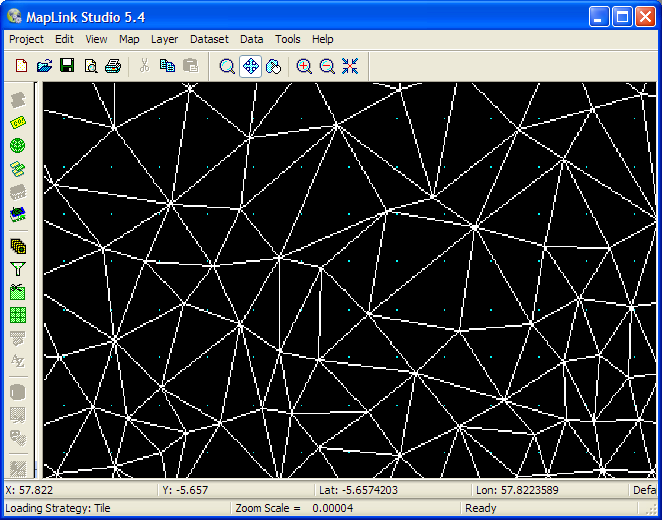

MapLink Pro Studio supports reading irregularly gridded information from ASCII Digital Elevation Model (DEM) Files. The data consists of a series of X/Y points with an associated Z value representing height or depth. The ASCII-DEM version is used for creating a light shaded colour raster image, and the ASCII-DEM-TERRAIN option is used to create data to be exported into a Terrain database or as DTED.
MapLink Pro Studio requires a regular grid for terrain export, or to render terrain as a raster. The grid is formed by fitting a surface to the point data resulting in a series of triangles. The surface created is called a Triangulated Irregular Network (TIN).
This TIN can then be queried to provide a height value at each grid point (when importing data for a terrain set), or to shade the data based on height (when importing data as a raster).
For an ASCII DEM you can preview the result or the TIN. Purple dots are the grid points that will be generated.
The ASCII Dem filter can obtain data with quite a variation in content. The Configuration panel provides a wide number of options to deal with this.
Copyright © 1998 to 2025 by Envitia Group PLC.